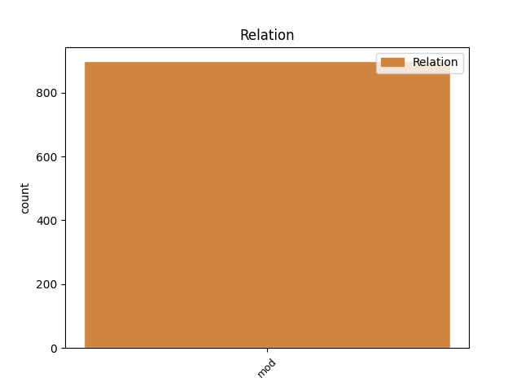
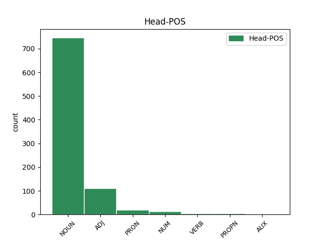
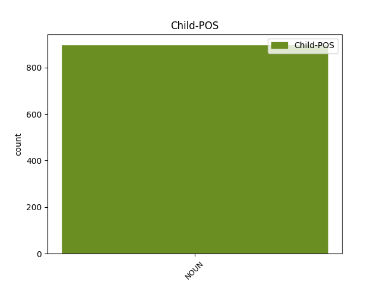

Distribution of features within this leaf



Agreement Rules sorted by frequency.
- When the dependent token is the modifer(mod) of the head token, and the head token is NOUN and the dependent token is NOUN.
1 in _ _ _ _ 0 _ _ _
2 þizozei _ _ _ _ 0 _ _ _
3 fairinos _ _ _ _ 0 _ _ _
4 gasak _ _ _ _ 0 _ _ _
5 ins _ _ _ _ 0 _ _ _
6 ƕassaba _ _ _ _ 0 _ _ _
7 ei _ _ _ _ 0 _ _ _
8 hailai _ _ _ _ 0 _ _ _
9 sijaina _ _ _ _ 0 _ _ _
10 in _ _ _ _ 0 _ _ _
11 galaubeinai _ _ _ _ 0 _ _ _
12 ni _ _ _ _ 0 _ _ _
13 atsaiƕandans _ _ _ _ 0 _ _ _
14 judaiwiskaize _ _ _ _ 0 _ _ _
15 spilli _ _ _ _ 0 _ _ _
16 jah _ _ _ _ 0 _ _ _
17 anabusne anabusns NOUN Nb Case=Gen|Gender=Fem|Number=Plur 0 _ _ _
18 manne manna NOUN Nb Case=Gen|Gender=Masc|Number=Plur 17 mod _ LId=2|ref=TIT_1.14
19 afwandjandane _ _ _ _ 0 _ _ _
20 sis _ _ _ _ 0 _ _ _
21 sunja _ _ _ _ 0 _ _ _
1 ju _ _ _ _ 0 _ _ _
2 ni _ _ _ _ 0 _ _ _
3 drigkais _ _ _ _ 0 _ _ _
4 þanamais _ _ _ _ 0 _ _ _
5 wato _ _ _ _ 0 _ _ _
6 ak _ _ _ _ 0 _ _ _
7 weinis wein NOUN Nb Case=Gen|Gender=Neut|Number=Sing 8 mod _ ref=1TIM_5.23
8 leitil leitils ADJ A- Case=Acc|Degree=Pos|Gender=Neut|Number=Sing|Strength=Strong 0 _ _ _
9 brukjais _ _ _ _ 0 _ _ _
10 in _ _ _ _ 0 _ _ _
11 qiþaus _ _ _ _ 0 _ _ _
12 þeinis _ _ _ _ 0 _ _ _
13 jah _ _ _ _ 0 _ _ _
14 þizo _ _ _ _ 0 _ _ _
15 ufta _ _ _ _ 0 _ _ _
16 sauhte _ _ _ _ 0 _ _ _
17 þeinaizo _ _ _ _ 0 _ _ _
1 fimf _ _ _ _ 0 _ _ _
2 tiguns tigjus* NUM Ma Case=Acc|Gender=Fem,Masc|Number=Plur 0 _ _ _
3 jere jer NOUN Nb Case=Gen|Gender=Neut|Number=Plur 2 mod _ ref=JOHN_8.57
4 nauh _ _ _ _ 0 _ _ _
5 ni _ _ _ _ 0 _ _ _
6 habais _ _ _ _ 0 _ _ _
7 jah _ _ _ _ 0 _ _ _
8 Abraham _ _ _ _ 0 _ _ _
9 saƕt _ _ _ _ 0 _ _ _
1 jah _ _ _ _ 0 _ _ _
2 swa _ _ _ _ 0 _ _ _
3 managai _ _ _ _ 0 _ _ _
4 swe _ _ _ _ 0 _ _ _
5 þizai _ _ _ _ 0 _ _ _
6 garaideinai _ _ _ _ 0 _ _ _
7 galaistans _ _ _ _ 0 _ _ _
8 sind _ _ _ _ 0 _ _ _
9 gawairþi _ _ _ _ 0 _ _ _
10 ana _ _ _ _ 0 _ _ _
11 im _ _ _ _ 0 _ _ _
12 jah _ _ _ _ 0 _ _ _
13 armaio _ _ _ _ 0 _ _ _
14 jah _ _ _ _ 0 _ _ _
15 ana _ _ _ _ 0 _ _ _
16 Israela Israel PROPN Ne Case=Dat|Gender=Masc|Number=Sing 0 _ _ _
17 gudis guþ NOUN Nb Case=Gen|Gender=Masc|Number=Sing 16 mod _ ref=GAL_6.16
1 ƕo ƕas PRON Pi Case=Nom|Gender=Fem|Number=Sing|PronType=Int 0 _ _ _
2 uþ _ _ _ _ 0 _ _ _
3 þan _ _ _ _ 0 _ _ _
4 samaqisse _ _ _ _ 0 _ _ _
5 alhs alhs NOUN Nb Case=Gen|Gender=Fem|Number=Sing 1 mod _ ref=2COR_6.16
6 gudis _ _ _ _ 0 _ _ _
7 miþ _ _ _ _ 0 _ _ _
8 galiugam _ _ _ _ 0 _ _ _
1 ni _ _ _ _ 0 _ _ _
2 waiht waiht NOUN Nb Case=Nom|Gender=Neut|Number=Sing 5 mod _ ref=MATT_10.26
3 auk _ _ _ _ 0 _ _ _
4 ist _ _ _ _ 0 _ _ _
5 gahuliþ ga-huljan VERB V- Aspect=Perf|Case=Nom|Gender=Neut|Number=Sing|Strength=Strong|Tense=Past|VerbForm=Part|Voice=Pass 0 _ _ _
6 þatei _ _ _ _ 0 _ _ _
7 ni _ _ _ _ 0 _ _ _
8 andhuljaidau _ _ _ _ 0 _ _ _
9 jah _ _ _ _ 0 _ _ _
10 fulgin _ _ _ _ 0 _ _ _
11 þatei _ _ _ _ 0 _ _ _
12 ni _ _ _ _ 0 _ _ _
13 ufkunnaidau _ _ _ _ 0 _ _ _
1 unte _ _ _ _ 0 _ _ _
2 wair _ _ _ _ 0 _ _ _
3 ist wisan AUX V- Mood=Ind|Number=Sing|Person=3|Tense=Pres|VerbForm=Fin|Voice=Act 0 _ _ _
4 haubiþ _ _ _ _ 0 _ _ _
5 qenais _ _ _ _ 0 _ _ _
6 swaswe _ _ _ _ 0 _ _ _
7 jah _ _ _ _ 0 _ _ _
8 Xristus _ _ _ _ 0 _ _ _
9 haubiþ haubiþ NOUN Nb Case=Nom|Gender=Neut|Number=Sing 3 mod _ ref=EPH_5.23
10 aikklesjons _ _ _ _ 0 _ _ _
11 jah _ _ _ _ 0 _ _ _
12 is _ _ _ _ 0 _ _ _
13 ist _ _ _ _ 0 _ _ _
14 nasjands _ _ _ _ 0 _ _ _
15 leikis _ _ _ _ 0 _ _ _
Disagree Examples:
1 ibai _ _ _ _ 0 _ _ _
2 magun _ _ _ _ 0 _ _ _
3 sunjus sunus NOUN Nb Case=Nom|Gender=Masc|Number=Plur 0 _ _ _
4 bruþfadis brūþfaþs NOUN Nb Case=Gen|Gender=Masc|Number=Sing 3 mod _ ref=MATT_9.15
5 qainon _ _ _ _ 0 _ _ _
6 und _ _ _ _ 0 _ _ _
7 þata _ _ _ _ 0 _ _ _
8 ƕeilos _ _ _ _ 0 _ _ _
9 þei _ _ _ _ 0 _ _ _
10 miþ _ _ _ _ 0 _ _ _
11 im _ _ _ _ 0 _ _ _
12 ist _ _ _ _ 0 _ _ _
13 bruþfaþs _ _ _ _ 0 _ _ _
1 in _ _ _ _ 0 _ _ _
2 fauramaþlja fauramaþleis NOUN Nb Case=Dat|Gender=Masc|Number=Sing 0 _ _ _
3 unhulþono unhulþo NOUN Nb Case=Gen|Gender=Fem|Number=Plur 2 mod _ ref=MATT_9.34
4 usdreibiþ _ _ _ _ 0 _ _ _
5 unhulþons _ _ _ _ 0 _ _ _
1 aþþan _ _ _ _ 0 _ _ _
2 izwara _ _ _ _ 0 _ _ _
3 jah _ _ _ _ 0 _ _ _
4 tagla tagl NOUN Nb Case=Nom|Gender=Neut|Number=Plur 0 _ _ _
5 haubidis haubiþ NOUN Nb Case=Gen|Gender=Neut|Number=Sing 4 mod _ ref=MATT_10.30
6 alla _ _ _ _ 0 _ _ _
7 garaþana _ _ _ _ 0 _ _ _
8 sind _ _ _ _ 0 _ _ _
1 Saƕazuh _ _ _ _ 0 _ _ _
2 nu _ _ _ _ 0 _ _ _
3 saei _ _ _ _ 0 _ _ _
4 andhaitiþ _ _ _ _ 0 _ _ _
5 mis _ _ _ _ 0 _ _ _
6 in _ _ _ _ 0 _ _ _
7 andwairþja andwairþi NOUN Nb Case=Dat|Gender=Neut|Number=Sing 0 _ _ _
8 manne manna NOUN Nb Case=Gen|Gender=Masc|Number=Plur 7 mod _ LId=2|ref=MATT_10.32
9 andhaita _ _ _ _ 0 _ _ _
10 jah _ _ _ _ 0 _ _ _
11 ik _ _ _ _ 0 _ _ _
12 imma _ _ _ _ 0 _ _ _
13 in _ _ _ _ 0 _ _ _
14 andwairþja _ _ _ _ 0 _ _ _
15 attins _ _ _ _ 0 _ _ _
16 meinis _ _ _ _ 0 _ _ _
17 saei _ _ _ _ 0 _ _ _
18 in _ _ _ _ 0 _ _ _
19 himinam _ _ _ _ 0 _ _ _
20 ist _ _ _ _ 0 _ _ _
1 iþ _ _ _ _ 0 _ _ _
2 þisƕanoh _ _ _ _ 0 _ _ _
3 saei _ _ _ _ 0 _ _ _
4 afaikiþ _ _ _ _ 0 _ _ _
5 mik _ _ _ _ 0 _ _ _
6 in _ _ _ _ 0 _ _ _
7 andwairþja andwairþi NOUN Nb Case=Dat|Gender=Neut|Number=Sing 0 _ _ _
8 manne manna NOUN Nb Case=Gen|Gender=Masc|Number=Plur 7 mod _ LId=2|ref=MATT_10.33
9 afaika _ _ _ _ 0 _ _ _
10 jah _ _ _ _ 0 _ _ _
11 ik _ _ _ _ 0 _ _ _
12 ina _ _ _ _ 0 _ _ _
13 in _ _ _ _ 0 _ _ _
14 andwairþja _ _ _ _ 0 _ _ _
15 attins _ _ _ _ 0 _ _ _
16 meinis _ _ _ _ 0 _ _ _
17 þis _ _ _ _ 0 _ _ _
18 saei _ _ _ _ 0 _ _ _
19 in _ _ _ _ 0 _ _ _
20 himinam _ _ _ _ 0 _ _ _
21 ist _ _ _ _ 0 _ _ _